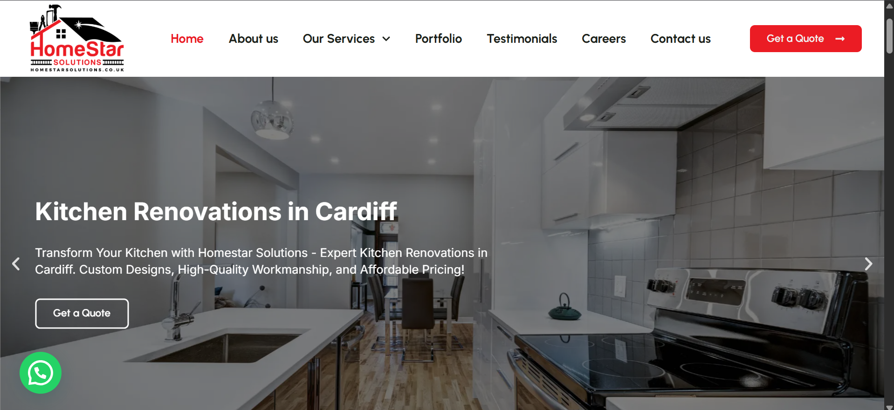

The Brief
HomeStar Solutions needed a professional website that felt more established than a simple brochure site. The goal was to present services clearly, make the brand feel trustworthy, and create a stronger path toward enquiries.
A WordPress website designed to build trust fast, present services clearly, and convert visitors into enquiries for HomeStar Solutions.
HomeStar Solutions needed a professional website that felt more established than a simple brochure site. The goal was to present services clearly, make the brand feel trustworthy, and create a stronger path toward enquiries.
I built a clean WordPress structure with Elementor, focused on service clarity, trust-building content blocks, and a conversion path that keeps the user moving from the hero into enquiry-focused sections. The layout was deliberately simplified so the content could do more of the selling while the design stayed sharp and easy to scan.

Let’s plan a website that looks premium, loads fast, and turns visitors into leads.
Start a Project →